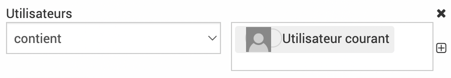
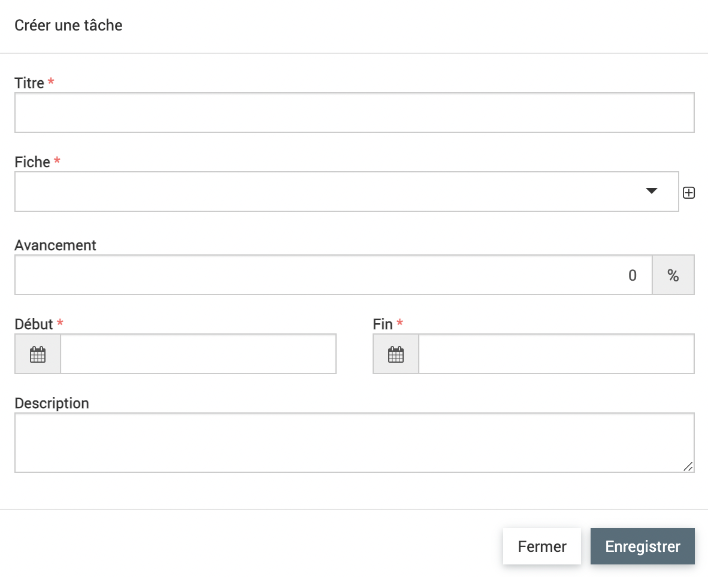

Tâches
Les tâches permettent
Les fonctionnalités de tableau et d’ajout sont détaillées dans la partie Fonctionnalités générales.
Il y a un filtre par défaut lorsque l’on arrive sur les tâches : le tableau montre l’utilisateur connecté par défaut.
{kind=link}
En cliquant sur le titre de la tâche, on accède aux détails. Le titre de la tâche, le rattachement à la fiche et les dates de début et fin sont les champs obligatoires.
{kind=link}
Par défaut, quand on créé une tâche dans le module tâche, elle est attribuée à l’utilisateur connecté. Pour attribuer une tâche à un autre utilisateur, il faut la rajouter depuis l’onglet Tâche des fiches.
La partie Avancement de la tâche n’a rien à voir avec l’onglet avancement dans les fiches.
On peut rattacher des mots clés aux tâches, la case « Tâche » doit être cochée dans le mot clé.
Avertissement
La partie mots clés n’est pas clairement indiqué dans le formulaire des tâches mais les champs de mots clés se rajoutent à la fin du formulaire en dessous du champs Description.